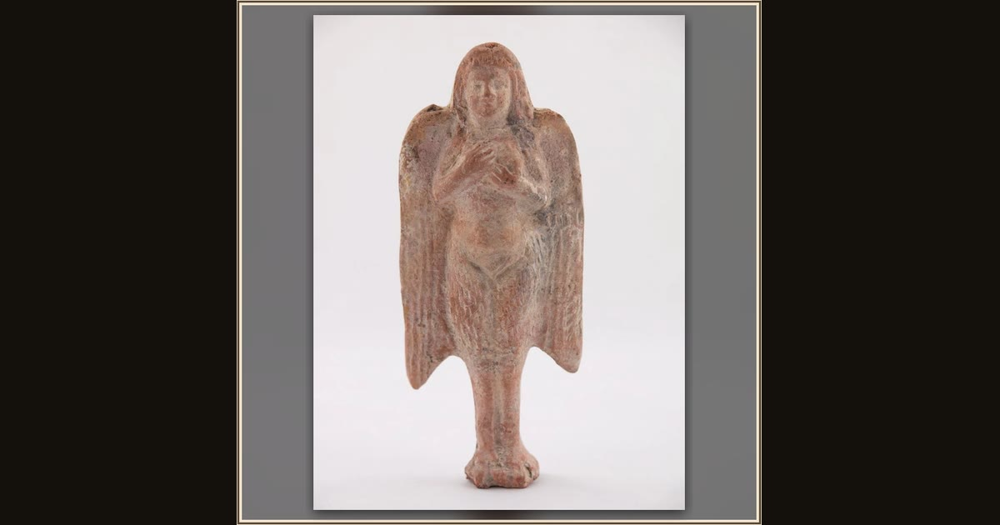

Statuette of a Siren
Greek; possibly Myrina, Lemnos · 3rd-1st century BCE · The Art Institute of Chicago · Chicago, USA
The Sirens were part woman, part bird, and all danger — this small ancient figure is one of the singers Odysseus longed to hear. Explore its place in Book XII of the Odyssey.